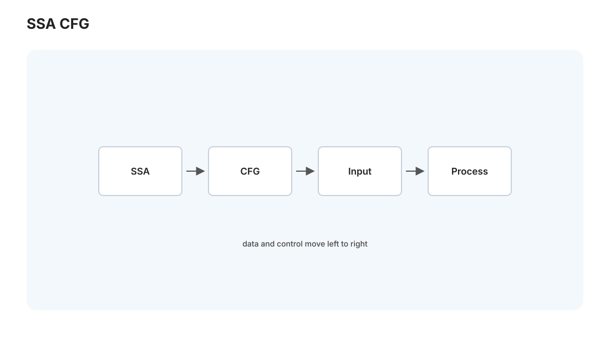
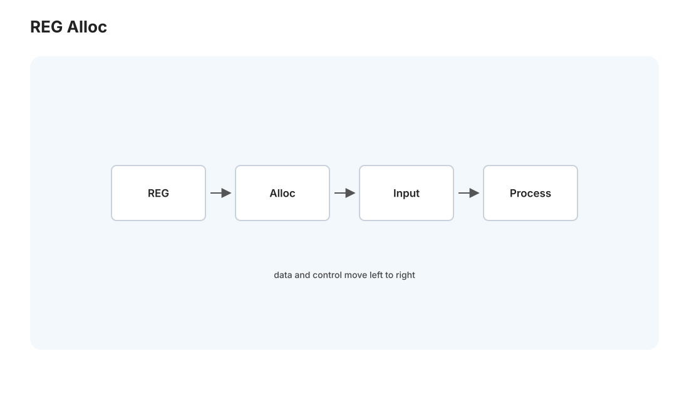
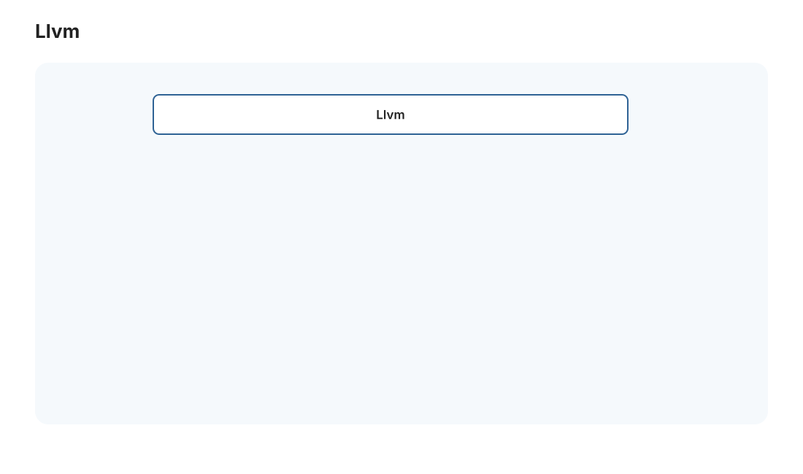

本页目录
编译 III · IR、优化与代码生成
对标：Stanford CS143 后半 / 龙书优化篇 / LLVM 文档 ｜ 前置：comp-01/02、csapp-01（汇编）、perf 线 编译器后端——把与源语言无关的中间表示（IR）变成又快又正确的机器码。这是编译器"施展魔法"的地方：你写的朴素代码为什么能被
-O2变快好几倍。这一页讲 IR 的设计（SSA 为什么优雅）、经典优化、寄存器分配（图着色的漂亮应用），落到 [大 Project P04 编译器后端]。理解这些，你会写出对编译器友好的代码，也会懂-O2到底做了什么。
1. 中间表示（IR）：优化的舞台

前端产出 AST，但 AST 不适合优化（树形、贴近源语言）。后端先降级到中间表示 IR——一种"抽象汇编"：线性的三地址码（t1 = a + b）、无限虚拟寄存器、控制流用跳转。IR 是优化的通用语言，也是 comp-01 说的"\(m+n\) 解耦"的枢纽。
控制流图（CFG）：把 IR 按基本块（一段无跳转的顺序指令）切分、块间用边表示跳转——程序变成一张图。几乎所有优化和分析都在 CFG 上做（🔗 与 algo 线图算法、adv-02 的数据流同构）。
SSA（静态单赋值）形式【关键设计】：IR 的现代标配——每个变量只被赋值一次（重复赋值就改名 x1, x2, x3）。控制流汇合处用 φ 函数选择来自哪条路径的值。为什么 SSA 这么重要：它让"每个变量的定义唯一"，于是"这个值从哪来"一目了然——数据流分析、常量传播、死代码消除全都变简单。LLVM IR、现代 JIT 全用 SSA。"给每个赋值一个唯一名字"这个小约束，让整个优化管线清爽起来——是编译器设计的一个高杠杆点子。
2. 经典优化：-O2 在做什么
优化 = 在不改变程序语义的前提下让它更快/更小。经典变换（多数在 SSA 上）：
- 常量折叠 / 传播：
x = 3 * 4编译期算成x = 12；已知常量的变量替换进使用处。 - 死代码消除：算了不用的、永不执行的分支——删。
- 公共子表达式消除：
a*b算过就复用，不重算。 - 循环优化（收益最大，因为循环占运行时间）：循环不变量外提（循环里不变的计算移到循环外）、强度削弱（
i*8换成加法）、循环展开（减少分支开销、利于流水线和向量化，🔗 perf-01）。 - 内联：把小函数体直接展开到调用处——消除调用开销 + 暴露更多跨函数优化机会（内联是"优化的使能器"，展开后其他优化才能施展）。
数据流分析是优化的引擎（🔗 与 adv-02 谱/不动点、数学站不动点迭代同构）：像"活跃变量分析""到达定值"这类分析，都是在 CFG 上迭代求不动点——把优化所需的信息（哪些变量还会用、这个值可能是什么）算出来。编译器优化的理论底座是格论 + 不动点，你的数学背景在这里又能用上。
3. 寄存器分配：图着色的漂亮应用

IR 用无限虚拟寄存器，但真实 CPU 只有十几个物理寄存器（csapp-01）。寄存器分配：把无限虚拟寄存器映射到有限物理寄存器，装不下的溢出（spill）到内存（慢）。这是编译器对性能影响最大的后端步骤之一。
图着色建模【机理】：建冲突图——变量为点，两变量若"同时活跃"（生命期重叠、不能共用一个寄存器）就连边。用 \(k\) 个物理寄存器分配 = 给这张图做 \(k\) 着色（相邻点不同色）。图着色是 NP 难（🔗 algo-03、toc-02），所以编译器用启发式（Chaitin 的"移除低度点"贪心）：度 < k 的点一定能着色，反复移除、栈式回填，无法着色的就 spill。"寄存器分配 = 图着色"是理论优雅落地工程的经典范例——你在算法课学的图着色，在这里是每次编译都在跑的核心。
4. 代码生成与现代编译器架构

最后一步把优化后的 IR 翻成目标机器码——指令选择（IR 操作 → 机器指令，可能一对多）、指令调度（重排以利流水线、隐藏延迟）、生成最终二进制。
LLVM 的现代架构（把全站编译知识收成一张图）：
Clang/Rust/Swift 前端 → LLVM IR（SSA）→ 一堆优化 pass → 各架构后端（x86/ARM/RISC-V/... 甚至 GPU）
为什么你要懂后端：① 写对优化友好的代码（别手动做编译器能做的、但要帮编译器看清意图——如避免指针别名让它敢优化）；② 读懂 -O2 -S 的汇编做性能分析（perf 线）；③ 理解"为什么 debug 版慢、release 版快"。
5. 练习与要点
例 1（转 SSA） 把一段有重复赋值和一个 if 汇合的代码转成 SSA（重命名 + 在汇合处放 φ）——理解 φ 函数"按来路选值"的作用，SSA 的核心一次看懂。
例 2（看 -O2 的威力） 写一个含循环不变量 + 死代码 + 常量表达式的 C 函数，对比 -O0 和 -O2 的汇编（gcc -S）——亲眼看编译器删了什么、外提了什么，-O2 不再是黑魔法。
例 3（寄存器分配着色） 给 4 个变量的生命期区间画冲突图，用 3 个寄存器做图着色，找出必须 spill 的变量——把 algo 线的图着色用到真实编译器决策。\(\blacksquare\)
📋 大 Project P04 · 编译器后端
教师版作业说明书，不提供完整解。 承接 L04 的小语言前端，课程目标是让学生把“解释执行”推进到“可优化、可生成目标代码”。
- 学习目标：理解 IR、CFG、SSA、优化 pass、寄存器分配和代码生成之间的分工；学会用解释器作为编译器正确性的 oracle。
- 教师提供：L04 语言前端、解释器、AST 测试集、IR 文本格式、golden output、若干 benchmark 程序（递归、循环、数组、函数调用）。
- 学生任务：① AST → 三地址码 IR + CFG；② 转 SSA，插入 φ 并完成变量重命名；③ 优化 pass：常量折叠、拷贝传播、死代码消除、循环不变量外提；④ 寄存器分配：活跃变量分析 + 冲突图着色 + spill；⑤ 目标：LLVM IR、字节码 VM、或 RISC-V 子集汇编三选一。
- 正确性约束：每个优化 pass 必须保持解释器结果一致；SSA 必须能 round-trip 回非 SSA；寄存器分配不能改变调用约定；递归和局部变量作用域必须正确。
- 验收测试：公开/隐藏程序结果与解释器一致；
--dump-ir、--dump-ssa、--dump-regalloc可读；优化后 benchmark 至少有 2 个出现可测加速；错误程序给出定位明确的诊断。- 评分重点：IR/CFG 25%，SSA 与优化 30%，寄存器分配/代码生成 30%，调试输出与报告 15%。
- 延伸挑战：加入窥孔优化或尾递归优化，并用汇编差异解释优化为何有效。
系统线全部完成（18 页）！CSAPP → OS → 网络 → 数据库 → 分布式 → 编译，计算机系统的六大支柱你都走了一遍。下一页转入并行与性能线：怎么让程序真正快起来。